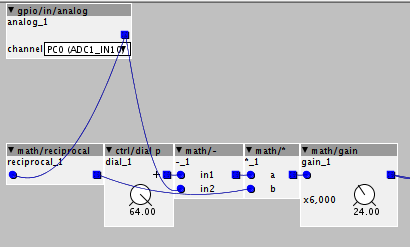
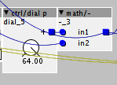

As @mtyas stated, it is possible to linearise @johannes "dual touch" trick, it is just a matter of a few math ops.
Here is an ASCIImatic of my little setup :
0v---[ 1k ]-----[softPot]-----[ 1k ]---0v
| ^ |
V | V
PC0 VDDA PC1
The soft cursor is connected to VDDA and the sides are connected to the ground through resistors.
Finding where the fingers are is a matter of inverting the voltage dividers formed by the 1k resistors and the sections of the softPot.

The math/gain depends on the ratio between the softpot total resistance and the "side" resistance (thus side resistors main have to be adapted).
The math for the other side is the same, but it will provide the distance from the other border of the softPot, so, you have to "complement it" (64-x):

Note: when there is no "touchés", PC0 and PC1 goes towards zero (zero+noise). If no FSR is layered, this can be used to generate a gate signal and to control a sample and hold object for pitches.
The main interest in the linearisation is that both "touchés" are on the same scale...
thus it is possible to detect when both "touchés" are so close that they correspond to a single finger (left side and right side of the same finger).
In the case the "touchés" are separate, it is even possible to correct the position by asserting an offset (5mm or so, corresponding to the half width of the finger touch)
I think that those tricks (and sort of cheating) make a ribbon controller much more enjoyable.
Well... now, i'll have to get a 50 cm softpot... one octave is not enough !


 Winter is here so a good 5 months to include some new ekciting updates.
Winter is here so a good 5 months to include some new ekciting updates.